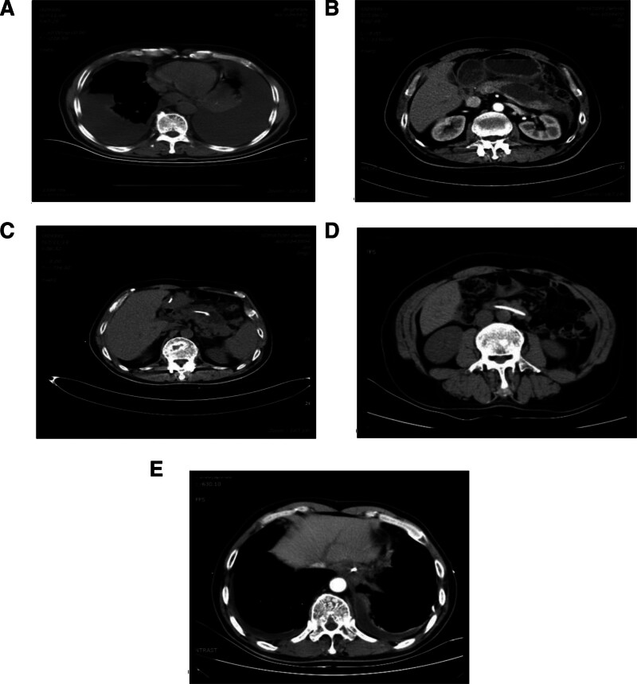
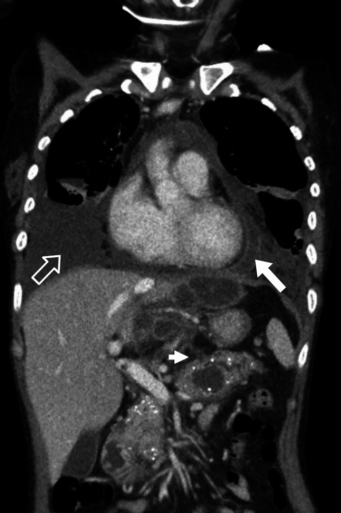
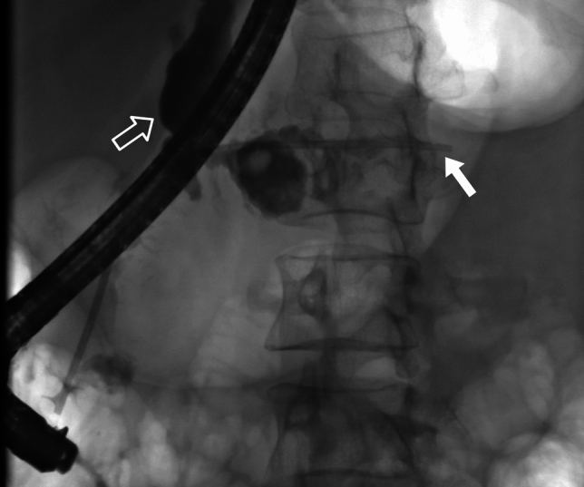

1737 — Rò tụy–màng phổi: tràn dịch màng phổi tái phát giàu amylase / Pancreaticopleural fistula
Tags: pattern:tran-dich-mang-phoi-tai-phat pattern:amylase-cao pattern:ro-ong-tuy pattern:gia-nang-tuy pattern:trung-that-tuy pattern:trao-doi-dich-xuyen-hoanh vung:mong-phoi vung:trung-that vung:tuy vung:o-bung protocol:CT-nguc-bung protocol:MRCP protocol:ERCP protocol:EUS protocol:choc-do-mang-phoi
Mức chắc chắn (certainty): tổng hợp y văn (literature synthesis) — 1 tổng quan 91 ca (2025), 1 đoàn hệ 48 ca đặt stent nội soi (2026), 1 đoàn hệ tiến cứu 22 ca (2022), 1 loạt 4 ca, 2 tổng quan về hình ảnh và 1 ca nguyên văn. Không có RCT; mọi ngưỡng dưới đây là tổng hợp từ loạt quan sát, và bài ghi rõ khi các nguồn dùng ngưỡng khác nhau.
Vì sao bài này quan trọng: bài 1736 vừa chốt cổ trướng tụy — dịch tụy chảy vào phúc mạc. Nhưng khi ống tụy vỡ ra phía sau, dịch đi qua khoang sau phúc mạc → trung thất → màng phổi, và bệnh nhân đến với khó thở, không đau bụng. Đây là lý do bệnh nhân thường được khám tim–phổi–lao nhiều tuần trước khi ai đó nghĩ tới tụy. Sai lầm chết người không phải bỏ sót một hình ảnh đẹp, mà là dẫn lưu màng phổi đơn thuần — ống dẫn lưu sẽ chảy mãi vì nguồn rò chưa được cắt.
Sửa tiền đề của backlog (trung thực nguồn): backlog ghi "tràn dịch màng phổi TRÁI". Thực tế trái 54–86%, phải 13–34%, hai bên 9–19% — thể phải không hiếm và là bẫy hay bị loại trừ. Bài giữ cả ba khả năng.
1. Tổng quan bệnh học – cơ chế hình ảnh – vì sao "chỉ thấy tràn dịch"
- Định nghĩa: rò tụy–màng phổi (pancreaticopleural fistula, PPF) là đường thông giữa ống tụy/nang giả tụy và khoang màng phổi, làm dịch tụy giàu enzym chảy liên tục vào màng phổi.
- Hai kiểu tràn dịch do tụy — phải phân biệt ngay từ đầu:
Kiểu Cơ chế Đặc điểm dịch Diễn tiến Tràn dịch phản ứng (reactive) Viêm tụy cấp gây viêm màng phổi hóa học Nhỏ, thường trái, amylase < 100 U/L, protein < 3 g/dL Tự hết khi tụy hồi phục; gặp ở 3–17% viêm tụy cấp Rò tụy–màng phổi (PPF) Ống tụy vỡ/nang giả vỡ tạo đường rò Lớn, tái phát nhanh, amylase thường > 1.000 U/L (tới 446.600 U/L trong y văn), protein > 3 g/dL Không tự hết nếu không cắt nguồn; tái phát sau rút ống - TẠI SAO dịch đi từ bụng lên ngực: ổ bụng có áp lực dương, lồng ngực có áp lực âm trong thì thở vào → gradient áp lực một chiều hút dịch tụy qua các lỗ hoành (hiatus) — chủ yếu lỗ thực quản và lỗ động mạch chủ. Đây là lý do (a) dịch tái tích rất nhanh sau chọc hút, và (b) dẫn lưu màng phổi không bao giờ chữa khỏi — nguồn sản xuất vẫn nằm dưới cơ hoành.
- TẠI SAO amylase màng phổi rất cao mà amylase máu bình thường: amylase là protein ~54 kDa, khuếch tán được qua màng phổi; nhưng amylase được sản xuất liên tục vào khoang màng phổi và hấp thu qua bạch mạch rất chậm, nên nồng độ tích tụ cao gấp hàng trăm lần huyết thanh. Amylase máu chỉ tăng nhẹ hoặc bình thường (do tái hấp thu chậm) — amylase máu bình thường KHÔNG loại trừ PPF.
- Vì sao đau ngực/khó thở chứ không đau bụng: dịch tụy gây viêm màng phổi hóa học và chiếm thể tích → khó thở, đau ngực, ho. Trong 91 ca: khó thở 74,73%, đau ngực 46,15%, ho 12,09%, đau bụng chỉ 31,87%, sốt 15,38%.
- Dịch tụy trông thế nào: thường dịch tiết, màu nâu đỏ–xanh sẫm (không phải màu rơm), protein > 3 g/dL, glucose thấp–trung bình, tế bào chủ yếu lympho. Màu sắc là gợi ý rẻ tiền nhưng hữu ích.
- Dịch tễ và ngưỡng định lượng:
- PPF chiếm < 1% mọi tràn dịch màng phổi; gặp ở 3–7% bệnh nhân viêm tụy; trong viêm tụy mạn là 0,4–2,49%.
- Giới: nam 84,62% (91 ca); tuổi trung vị 51 (41–58), khoảng 3–81.
- Nguyên nhân: viêm tụy mạn 78,02%, viêm tụy cấp 7,69%, u 2,20%, chấn thương 2,20%, đột biến gen 3,30%; rượu 52,75%, nang giả tụy 29,67%.
- Vị trí vỡ ống tụy: thân 39,56%, đuôi 30,77%, đầu 21,98%, thân–đuôi 3,30%, cổ 2,20%.
- Bên tràn dịch: trái 57,14%, phải 34,07%, hai bên 8,79%; lượng lớn 93,41%. Loạt Helsinki 48 ca: trái 54%, phải 21%, hai bên 19%, trung thất 10%.
- Tràn dịch màng tim/tim do amylase gặp trong 4%, cổ trướng kèm theo 20%.
2. Mẫu hình + chẩn đoán phân biệt theo vị trí và theo amylase (Gamut)
- Mẫu hình cốt lõi: tràn dịch màng phổi một bên, lượng lớn, tái phát nhanh sau chọc hút, ở người có tiền sử viêm tụy/rượu → amylase dịch màng phổi là xét nghiệm chốt hướng.
- Gamut theo bên:
- Trái (54–86%): ổn định nhất về giải phẫu — đuôi/thân tụy sát hoành trái, đường rò qua lỗ thực quản/ĐMC.
- Phải (13–34%): đường rò chạy sau tĩnh mạch chủ hoặc qua lỗ thực quản sang phải; không được loại trừ PPF chỉ vì dịch bên phải. Trong loạt Helsinki, 1 ca thân tụy rò thẳng vào màng phổi phải kèm dịch màng tim.
- Hai bên (9–19%): thường do nang giả trung thất vỡ vào cả hai khoang hoặc rò lượng lớn; đây là thể dễ bị chẩn đoán nhầm nhất.
- Gamut theo amylase dịch màng phổi:
- Rất cao (> 10.000 U/L): PPF gần như là chẩn đoán duy nhất; vỡ thực quản (Boerhaave) cũng tăng nhưng thường < 5.000 và có bối cảnh nôn dữ dội, tràn khí trung thất.
- Trung bình (200–1.000 U/L): PPF thể ít lưu lượng, tràn dịch phản ứng do tụy, ung thư biểu mô tiết amylase (phổi/buồng trứng), lao màng phổi.
- Bình thường (< 150 U/L): loại PPF, nghĩ tràn dịch tim/thận/lao/ác tính.
- Gamut theo hình ảnh:
- Thấy đường rò/nang giả dưới hoành hoặc nang giả trung thất → PPF gần như chắc chắn.
- Chỉ thấy dịch + xẹp phổi → vẫn phải làm amylase dịch; hình ảnh âm tính không loại trừ.
- Dịch màng phổi khu trú (encapsulated) hoặc dày màng phổi → nghĩ PPF đã lâu, có thể bội nhiễm (26,67% trong loạt 15 ca có ổ dịch khu trú).
3. Bảng so sánh phân biệt (ma trận đối chiếu)
| Thực thể (entity) | Hình ảnh điển hình | Chốt vào (rule-in) | Chốt loại (rule-out) | Gợi ý xác nhận |
|---|---|---|---|---|
| Rò tụy–màng phổi (PPF) | Tràn dịch một bên, lượng lớn, tái phát nhanh; nang giả tụy/ống tụy giãn; đường rò xuyên hoành trên CT coronal hoặc MRCP | Amylase dịch màng phổi > 1.000 U/L + protein > 3 g/dL + tiền sử viêm tụy; thấy đường rò trên MRCP/ERCP | Dịch nhỏ, amylase < 100 U/L, tự hết khi tụy hồi phục → tràn dịch phản ứng | CT ngực–bụng có cản quang + MRCP; ERCP xác nhận và điều trị |
| Tràn dịch phản ứng do viêm tụy cấp | Lượng nhỏ–trung bình, thường trái, đáy phổi; tụy phù/hoại tử | Bối cảnh viêm tụy cấp đang tiến triển; amylase dịch thấp | Amylase dịch > 1.000 + tái phát sau hút → không phải phản ứng đơn thuần | Theo dõi 48–72 giờ; amylase dịch nếu tái phát |
| Vỡ thực quản (Boerhaave) | Tràn dịch trái + tràn khí trung thất, tràn khí màng phổi; thực quản dày | Nôn dữ dội + tam chứng Mackler; dịch pH thấp, có hạt thức ăn | Amylase rất cao không loại trừ Boerhaave — phải xem pH và CT | CT ngực có uống cản quang tan trong nước; nội soi ống mềm |
| Tràn dịch ác tính | Lượng lớn, tái phát; nốt màng phổi, dày màng phổi; u phổi/vú/buồng trứng | Tế bào ác tính trong dịch; amylase có thể tăng do ung thư tiết amylase | Amylase > 10.000 + đường rò trên hình ảnh → nghĩ PPF hơn | Cytology, CT ngực–bụng–khung chậu, PET/CT |
| Lao màng phổi | Dịch tiết lympho, thường một bên; dày màng phổi | ADA > 40 U/L, lympho > 80%, Xpert dương | Amylase rất cao + tiền sử viêm tụy/rượu → nghĩ PPF | ADA, Xpert, cấy dịch; không điều trị lao thử khi amylase > 1.000 |
| Tràn dịch dưỡng trấp (chylothorax) | Dịch đục sữa, một hoặc hai bên; sau mổ/chấn thương | Triglyceride > 110 mg/dL (1,24 mmol/L), chilomicron dương | Dịch màu nâu đỏ–xanh, triglyceride thấp → không phải dưỡng trấp | Điện di lipoprotein, triglyceride dịch |
| Mủ màng phổi (empyema) | Dịch khu trú, split pleura sign, bóng khí nếu rò | pH < 7,20, glucose thấp, LDH cao, mủ | Amylase rất cao + protein > 3 mà không mủ → PPF bội nhiễm | Cấy dịch, CT có cản quang |

(A) tràn dịch hai bên lượng lớn lúc vào; (B) nang giả tụy; (C) dây dẫn ERCP đi vào nang giả; (D) nang giả xẹp sau dẫn lưu ống tụy 1 tuần; (E) tràn dịch còn lại. Nguồn: Zhao C và cs., Medicine (Baltimore) 2025, PMC11709174, CC BY 4.0.4. Protocol chụp + phân tầng điều trị
- Bước 1 — chứng minh dịch giàu amylase: chọc dò màng phổi, gửi amylase, lipase, protein, LDH, glucose, pH, triglyceride, tế bào, cấy, cytology. Ngưỡng thực hành: > 1.000 U/L là chốt kinh điển; loạt Helsinki dùng > 200 U/L cộng với hình ảnh; không có ngưỡng thống nhất — vì vậy amylase 400–1.000 U/L vẫn phải đối chiếu lâm sàng và hình ảnh, không được loại trừ.
- Bước 2 — tìm đường rò:
- CT ngực–bụng–khung chậu có cản quang thì tĩnh mạch cửa, lát 1–2 mm, dựng coronal/sagittal: tìm nang giả, ống tụy giãn, vôi hóa tụy mạn, dịch sau phúc mạc và đường rò xuyên hoành. CT có thể bỏ sót đường rò khi ống tụy không giãn hoặc dịch đã dẫn lưu hết.
- MRCP (tốt nhất là MRCP có secretin): không xâm lấn, thấy toàn bộ cây ống tụy, chỗ hẹp/đứt; độ nhạy ~80%; âm giả khi có nhiều nang giả hoặc cổ trướng làm giảm chất lượng ảnh.
- ERCP: vừa chẩn đoán (đặt được catheter: chẩn đoán 80%, thấy đường rò 59–74%; loạt khác 46–78%) vừa điều trị (cắt cơ vòng + stent ống tụy). Đây là lý do ERCP vẫn là bước tiếp theo khi amylase cao, không cần chờ MRCP.
- EUS: đường vào thay thế khi không tiếp cận được qua nhú tá tràng hoặc cần dẫn lưu xuyên thành.
- Bước 3 — phân tầng điều trị (bằng chứng quan sát, không RCT):
- Nội khoa trước/đồng thời: nhịn ăn, nuôi ăn tĩnh mạch, octreotide/somatostatin, dẫn lưu màng phổi. Nội khoa đơn thuần thất bại 59–69%.
- Nội soi can thiệp (ưu tiên): stent ống tụy 5–7 Fr bắc qua chỗ rò, lưu 4–6 tuần; nếu có ổ dịch khu trú → dẫn lưu xuyên thành. Thành công 50–86,36%; loạt 22 ca: 95,45% thành công lâm sàng, 86,36% thành công sau 1 năm, thời gian điều trị trung bình 191 ngày (88–712); loạt 48 ca: 90%, trung vị 3 lần ERCP (1–8), đóng rò sau 2,3 tháng (1–24); 22 ca (73%) đặt stent vượt qua chỗ đứt → thành công 100%.
- Mổ: khi nội soi thất bại, ống tụy tắc hoàn toàn, rò đuôi tụy phức tạp. Thành công 80–94%, nhưng tử vong 10–17% và biến chứng cao → không phải lựa chọn đầu tay.
- Theo dõi: 6 tháng là trung vị trong y văn, nhưng ca nguyên văn theo 5 năm; tái phát 2,2% (91 ca). Siêu âm/CT/MRCP khi có triệu chứng quay lại.
flowchart TD
A[Tràn dịch màng phổi tái phát + tiền sử viêm tụy hoặc rượu] --> B[Chọc dò: amylase, protein, pH, triglyceride, cytology]
B --> C{Amylase dịch màng phổi}
C -->|"> 1.000 U/L"| D[Nghi PPF: CT ngực-bụng + MRCP]
C -->|"200-1.000 U/L"| E[Lặp amylase + CT/MRCP; đừng loại trừ]
C -->|"< 200 U/L"| F[Tìm nguyên nhân khác: tim, lao, ác tính, dưỡng trấp]
D --> G[ERCP: cắt cơ vòng + stent ống tụy bắc qua chỗ rò]
G --> H{Đóng rò sau 4-6 tuần?}
H -->|Có| I[Rút stent, theo dõi 6 tháng]
H -->|Không| J[Mổ: cắt đuôi tụy hoặc nối tụy-hỗng tràng]
- Theo dõi ống dẫn lưu: lượng dịch giảm dần là dấu hiệu đóng rò; nếu vẫn > 500 mL/ngày sau 1 tuần → kiểm tra tắc stent/ổ dịch chưa dẫn lưu.
- Không có chỉ định đặt stent ống tụy "dự phòng" cho mọi viêm tụy cấp — chỉ khi có bằng chứng rò.
5. Biến thể bình thường và cạm bẫy
- Cạm bẫy 1 — lấy dịch ở bên "sai": trong PPF hai bên, amylase hai bên có thể chênh hàng chục lần (ca nguyên văn: 53.844 U/L bên trái vs 1.365 U/L bên phải). Nếu chỉ chọc bên phải, kết quả 1.365 U/L vẫn cao nhưng dễ bị đọc là "tăng nhẹ". Luôn chọc bên tràn nhiều hơn, và nếu nghi ngờ thì đo cả hai bên.
- Cạm bẫy 2 — amylase máu bình thường: đã gặp ca amylase niệu 333 U/L (bình thường) mà amylase màng phổi 53.844 U/L. Không dùng amylase máu để loại trừ.
- Cạm bẫy 3 — chẩn đoán nhầm lao: dịch lympho ưu thế + sốt nhẹ + tổn thương đáy phổi → dễ điều trị lao. ADA thấp, amylase rất cao, tiền sử rượu/viêm tụy là bộ ba phản biện. Điều trị lao muộn làm tăng nguy cơ dày màng phổi, ổ cặn và bỏ sót nguồn rò.
- Cạm bẫy 4 — Boerhaave: amylase dịch cũng tăng (do nước bọt), nhưng có tràn khí trung thất, pH dịch thấp, hạt thức ăn, bệnh cảnh nôn dữ dội. Đừng chỉ nhìn amylase.
- Cạm bẫy 5 — dẫn lưu màng phổi "thành công": phổi nở, bệnh nhân dễ thở hơn, nhưng ống vẫn chảy hàng trăm mL/ngày; đây là dấu hiệu nguồn rò còn, không phải "dịch dai dẳng vô căn". Rút ống sớm → tái tích dịch và bội nhiễm.
- Cạm bẫy 6 — nang giả trung thất đơn độc: trên CT chỉ thấy khối dịch trung thất, dễ chẩn đoán nang phế quản/nang thực quản/u trung thất. Tìm đuôi tụy sát hoành, vôi hóa tụy, và amylase dịch chọc hút.
- Cạm bẫy 7 — cạm bẫy mặt cắt (theo Argon): dịch quanh gan–lách có thể là cổ trướng chứ không phải tràn dịch màng phổi. Dùng dấu crus lệch (displaced crus sign) và dấu bare area: dịch màng phổi đẩy crus ra sau, cổ trướng nằm trước crus và không vào bare area. Với PPF, dịch có thể có cả hai — đây là lý do phải chụp toàn bộ ngực–bụng, không chỉ một vùng.
6. Tự lượng giá — Blind Quiz
Ca 1 — Nam 61 tuổi, khó thở và đau ngực 4 ngày, tiền sử viêm tụy cấp 9 tháng trước. Nhìn CT trước, mô tả trước khi mở đáp án.
- Gợi ý: bệnh nhân đã được điều trị viêm tụy, sau đó chỉ còn "đau bụng từng đợt". Không sốt.
- Câu hỏi: (1) Có mấy bất thường chính trên CT? (2) Xét nghiệm dịch màng phổi nào nên gửi đầu tiên? (3) Vì sao dẫn lưu màng phổi đơn thuần sẽ thất bại?
Bấm để hiện đáp án (findings + chẩn đoán)
- Dấu hiệu: (A) tràn dịch hai bên lượng lớn; (B) nang giả tụy cạnh thân tụy; (C) dây dẫn ERCP đi vào nang giả; (D) nang giả xẹp sau 1 tuần dẫn lưu ống tụy; (E) tràn dịch còn lại.
- Chẩn đoán: rò tụy–màng phổi do nang giả tụy vỡ vào khoang màng phổi.
- Số liệu của ca: amylase dịch màng phổi 53.844 U/L bên trái và 1.365 U/L bên phải; amylase niệu 333 U/L (bình thường); CA125 dịch màng phổi 1.859 U/L. Đã dẫn lưu 4.180 mL trái + 2.470 mL phải + 495 mL qua ống tụy trong 13 ngày.
- Vì sao dẫn lưu đơn thuần thất bại: áp lực bụng–ngực dương/âm tạo dòng chảy một chiều liên tục; phải giảm áp ống tụy (stent) hoặc cắt nguồn rò.
- Nguồn ảnh: Zhao C, Yao W, Wang Z, Medicine (Baltimore) 2025;104(1):e41184 (PMC11709174), CC BY 4.0.
Ca 2 — Nam 55 tuổi, khó thở, tràn dịch màng phổi PHẢI. Tiền sử viêm tụy do rượu.

- Câu hỏi: Mũi tên đặc và mũi tên rỗng chỉ gì? Vì sao đây là PPF chứ không phải tràn dịch ác tính? Bước tiếp theo?
Bấm để hiện đáp án
- Mũi tên rỗng: dịch giàu amylase trong khoang màng phổi phải. Mũi tên đặc: dịch trong màng tim. Mũi tên nhỏ: đường rò từ thân tụy đi lên qua hoành.
- Chẩn đoán: PPF thể phải — chứng minh rằng bên phải không loại trừ PPF; trong loạt này 21% bệnh nhân có tràn dịch phải.
- Bước tiếp theo: chọc dò → amylase (thường > 1.000 U/L) → ERCP cắt cơ vòng + stent ống tụy; dẫn lưu màng phổi chỉ để giải áp.
- Nguồn ảnh: Bäck M và cs., Surg Endosc 2026;40(5):3843–3851 (PMC13161290), CC BY 4.0.
Ca 3 — Cùng bệnh nhân Ca 2, sau khi đặt stent ống tụy.

- Câu hỏi: Stent nằm ở đâu, có bắc qua chỗ rò không? Thời gian lưu stent và tiêu chí thành công?
Bấm để hiện đáp án
- Stent nhựa trong ống tụy chính (mũi tên đặc); đường rò (mũi tên rỗng) đã được bắc qua. Trong loạt 48 ca, 22 ca (73%) đặt stent vượt qua chỗ đứt → thành công 100%.
- Thời gian: stent lưu 4–6 tuần; đóng rò trung vị 2,3 tháng (1–24). Thành công chung 90%, không tái phát trong loạt.
- Tiêu chí thành công: hết dịch màng phổi + đóng đường rò trên hình ảnh + rút được dẫn lưu.
- Nguồn ảnh: Bäck M và cs., Surg Endosc 2026 (PMC13161290), CC BY 4.0.
Bài liên quan chéo
- 1736 – Cổ trướng tụy & rò tụy nội bộ (thể dịch vào phúc mạc — cùng cơ chế, khác khoang)
- 1730 – Hội chứng ống tụy đứt (DPDS)
- 1683 – Hoại tử tụy nhiễm khuẩn & step-up
- 135 – Viêm tụy cấp (Atlanta)
- 040 – Tràn dịch màng phổi (dịch màng phổi vs cổ trướng, crus sign)
- 079 – Tràn dịch dưỡng trấp (chylothorax)
- 102 – Viêm tụy sau ERCP
Ảnh
1737_ro-tuy-mang-phoi_CT_PMC11709174-Fig1-CCBY.jpg— Zhao C và cs., Medicine (Baltimore) 2025 (PMC11709174), CC BY 4.0, nguyên bản.1737_ro-tuy-mang-phoi_CT-coronal_PMC13161290-Fig2-CCBY.jpg— Bäck M và cs., Surg Endosc 2026 (PMC13161290), CC BY 4.0, nguyên bản.1737_ro-tuy-mang-phoi_ERCP-stent_PMC13161290-Fig3-CCBY.jpg— Bäck M và cs., Surg Endosc 2026 (PMC13161290), CC BY 4.0, nguyên bản.1737_ro-tuy-mang-phoi_ERCP-drain_PMC9574034-Fig1-CCBY.jpg— Jagielski M, Piątkowski J, Jackowski M, Front Cell Infect Microbiol 2022;12:939137 (PMC9574034), CC BY 4.0, nguyên bản.- Chi tiết giấy phép từng ảnh:
images/CREDITS.md.
Không dùng để chẩn đoán độc lập khi chưa có người hướng dẫn.